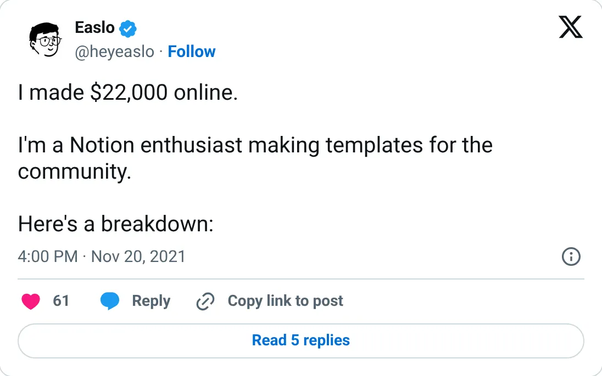
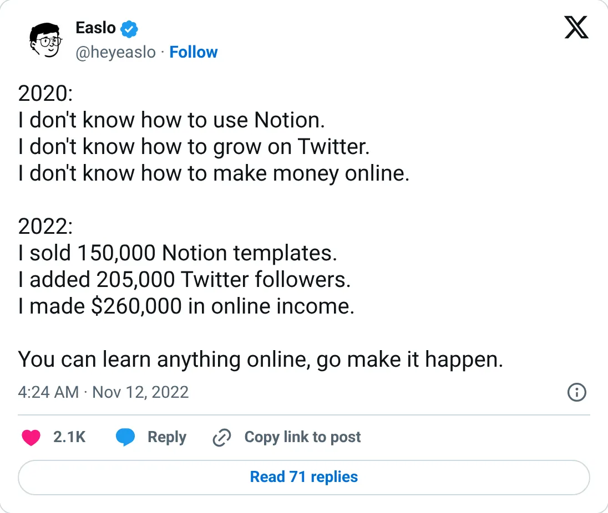

Don't build this
Easlo
Notion templates. A 2022 lifetime total, not a business you start now.
$260K total online income (Nov 2022)
Should you build this
Easlo sold Notion templates. The headline is $260k of lifetime income by November 2022 — cumulative, old, and sitting in front of a very large audience. There is no monthly rate. Template shops had a moment when Twitter could still push a Gumroad link. That is not a 2026 company to start.
Cited from the captured posts, shown below: the earliest captured post (Nov 20, 2021) is the source for “Made $22K online”; the latest milestone (Nov 12, 2022) is the source for “150,000 templates sold, $260K total”.
Posts this is based on

Made $22K online
Open on X

150,000 templates sold, $260K total
Open on X
What the product is
Notion templates (Second Brain, finance and habit trackers) and digital products, sold mostly through Gumroad.
⚠ Older: figures are cumulative and the latest is from 2022.